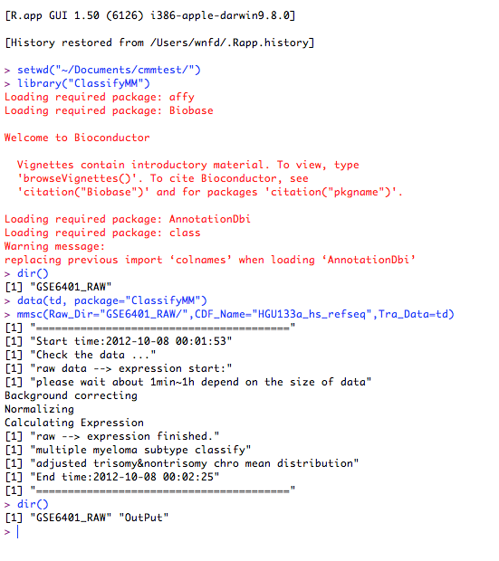

Multiple myeloma is a cancer of plasma cells that normally produces antibodies. Aneuploidy, the alterations in the number of whole or partial chromosomes, is consistently observed in many cancer types including multiple myeloma. According to the status of chromosomes in multiple myeloma, this cancer can be subdivided into two main subtypes: hyperdiploid multiple myeloma (HMM) and non-hyperdiploid multiple myeloma (NHMM). The two subtypes have different survival prognosis, possibly due to their different but converging paths to myeloma. The existing method to identify the two subtypes is fluorescence in situ hybridization (FISH), and there is no effective method using gene expression profiles to classify the two subtypes. We have built a nearest-neighbor based classification method to separate multiple myeloma into HMM and NHMM with gene expression profiles, providing a useful tool for further studying of multiple myeloma. We also provide publicly the R packages and the processed training data sets here.
Classifying hyperdiploidy status of multiple myeloma samples using gene expression profiles
Packages: Windows ClassifyMM_1.0.zip Mac ClassifyMM_1.0.tar.gz
Training data: TrainData.tar.bz2
Test data(GSE6401, not whole): GSE6401_RAW.tar.bz2
Source code: mmsc.r
Package affy
> source("http://bioconductor.org/biocLite.R")
> biocLite("affy")
Package AnnotationDbi
> source("http://bioconductor.org/biocLite.R")
> biocLite("AnnotationDbi")
Data CDF file download
Exmaple for download "HG-U133_Plus2" array:First, verify you OS and R version. Here my work on Mac OS and R2.15. Second, click the link above, find column names R.15,BioCxxx and raw names REFSEQ, click "click me". Last, look for ran names "HG-U133_Plus2" and column names "source"(win32 for windows), click "C".
run R GUI --> package/data --> package installer --> local source package.
Note:Do not use command install.packages(), It does not work!
Install ClassifyMM
run R GUI --> package/data --> package installer --> local source package.
Raw_Dir | Exp_File : Raw_Dir for raw data directory and Exp_File for expression data file name. The format of raw data is compressed .cel from GEO database by affy matrix technology. You can input raw data directly, then the program will first calculate the expression by R package affy. Otherwise, you must provide common style expression data. You can't provide both Raw_Dir and Exp_File.
CDF_Name : Refer to CDF names used by package "affy".
[Tra_Dir] : A directory contain the training data. By default it's "./TrainData".
[Out_Dir] : A directory contain all of result and temp file. By default it's "./OutPut".
[K_Const] : The number of neighbors used in KNN classifer. By default it's 16.
[Tun_Time] : By default it's 1:140.
Note:[ parameter ] parameter is optional.
ExprData_MM_sort.txt :
Expression_Temp.XLS :
MeanDistPlot :
MMSCresult_k16.txt :
#set workshop
setwd("~/Documents/YingxiangL/");
#overview the file and directory
dir();
#load package
library(ClassifyMM);
#analysie data
mmsc(Raw_Dir=“GSE6401_RAW/”, Tra_Dir="TrainData/", CDF_Name="HGU133a_hs_refseq");

Developed by Cheng Li Lab.